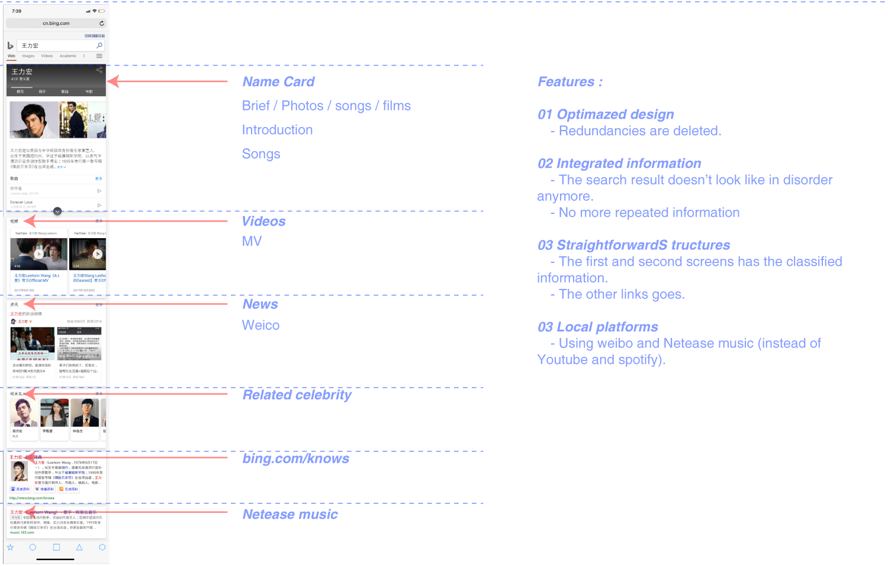
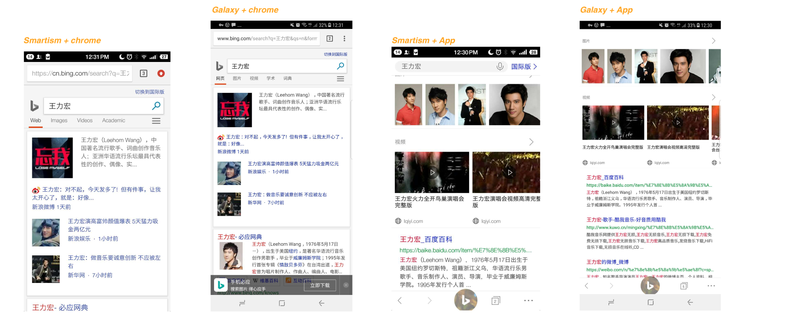
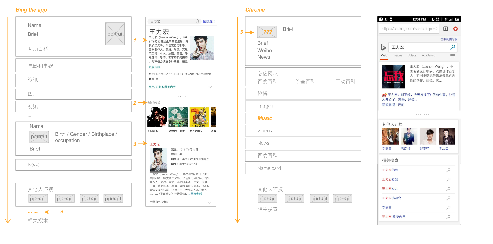
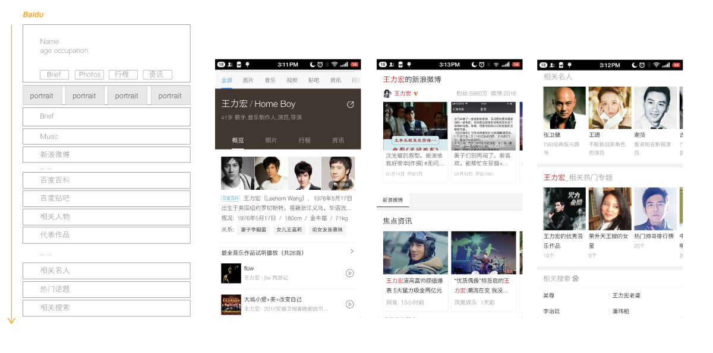
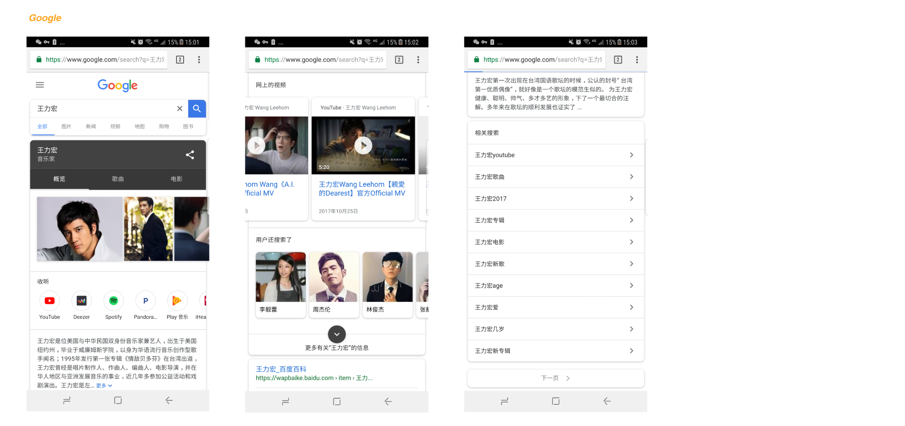

👱 Celebrity
more images of final design to come before 8:00pm
The final design

End to end user scenarios
Ming is fifteen years old. He loves keeping pace with trend but he got a lot of assignment to do everyday. Today ocassionally he heard her sister talking about some idol of her generation. Ming got curious and entered bing to search. "Leehom wang is a handsome singer and he looks really young !" He then clicked the play button and enjoyed his music. After getting to know his basic and famous songs, Ming scrolled down to the second page, watched some videos cut from his film. Also, with the help of Bing recommendation, he saw some other related idols, like Zhoujielun and Linjunjie. He felt like he finally got to know her sister's interests. "Now we have a common topic!", he thought.
1 RESEARCH
● COMPARE AND CONTRAST
What it looks like from different mobile phones and different platforms?
Is it responsive and consistent?
I searched 王力宏 both on browsers and the Bing App on two different sizes of phones.
01 Smartism T2 / Portrait Dimensions: 1080 x 1920 pixels
02 GALAXY S8 / Portrait Dimensions:1440 x 2960 pixels

Smartism + chrome | Galaxy + Chrome | Smartism + app | Galaxy + app
There are more information and images within one screen for Galaxy. Apart from it, the results are similar and the responsive looks good.
However, when comparing between the chrome version and the app version, there are a lot of difference between their vertical structures and information hierarchy.
I decided to turn the research focus onto the difference. I compared the difference between the chrome version and app version:

Bing the app | Being Chrome
Summary:The searching experience is kind of confusing for me, and making the comparison between two versions even confused me more. As a user, I would prefer to see the uniformity of things: If the visual language and the searching result have consistency of different versions, I would think it is stable and worthy to be trusted. Also, there are some repeated information and irrelevant information are shown and caused distraction. For people don't know 王力宏 quite well (me as an example), the searching result can take some time to get familiar with.
To be specific,
01 & 03: The name card appeared twice in the searching result. The first one is helpful,telling me the brief of the celebrity, and when I see the second name card, it is irritating.
02: The grey title is concise and helpful. It looks like bing has done that classification for you, and the information is not scattered, it is organized instead. I don't have to look into some specific page and read and try to find something. The path has been shortened.
04: When it comes to "其他人还搜" and "相关搜索". I prefer the chrome version: they are put together and not divided since what other people are searching and related searches are both related searches.
05: What is the profile picture of the chrome version? I was supposed to see 王力宏's handsome face but I saw two big red characters "忘我" ? What is that ... Is it his song name? I still didn't get it now ...
The competitors: How is the experience searching on Google or Baidu?

Results on Baidu
Baidu : Generally speaking the experience is good. The information within name card is integrated, and Baidu got the right photo (four of them!). I actually don't want play his music but I got to know he is a singer at my first glance. Besides, many baidu's products are listed at an obvious position. I don't like this way of promotion.

Google : Results on Google are clear and well designed. However, the channels are quite different from Baidu and cn Bing. They put Youtube and spotify at the first place instead of Netease music, qq music, weibo or other prevail platforms in China. I like it, but it doesn't fit for Chinese cultural context since with GFW the youtube is yet unavailable for most people. Also, it tells me he is a musician directly, lefting all the unnecessary details behind, it is effective but also has demerits: when you want to learn about his age, wife or hometown, you have to click more times.
● A QUICK INTERVIEW
When and who do people search? What do they expect to get?
⓪ Geng, 21 years old, student
"I searched rolling stone yesterday. I wanted to get some information about their classic concerts. They are hard to find. The songs of them are easy to acquire but the concerts videos are rare. Also, it isn't convenient if you want to listen to a specific song because their popular songs are always at the top. Besides, their old news are hard to discover.(Since most of the news are the latest) I have to looking through pages of searching results to dig out their old history.
If you want to acquire anymore information that is detailed, searching with the search engine is far not enough. The field is vertical, yet the searching engine would only give you general results."
① Me myself, 21 years old, student
"I searched 李小璐 recently. To be honest, I am not familiar with the entertainment industry. So when her name went up at the top searching list on weibo for several days, I started to get curious. The name sounds familiar to me but I still don't know who she is. Weibo doesn't work for me : I searched her on weibo firstly, her rumors were everywhere but no general introduction about her. "
● OTHER OBSERVATIONS
01 Basic and organized information. If they need more specific and detailed information, they would use perciser word instead of just searching the name. From my asumption, most of users are not familiar with the celebrity they are going to research.
02 Link to other platforms. Some users use bing to search to other more vertical platforms. Like
03 The name card. If the information on the name card is well designed and clear, most users don't need a second click and already got the information they want.